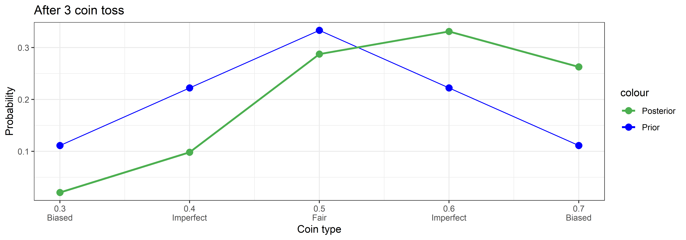
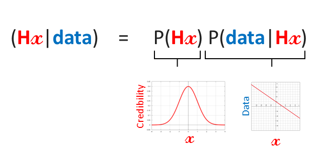
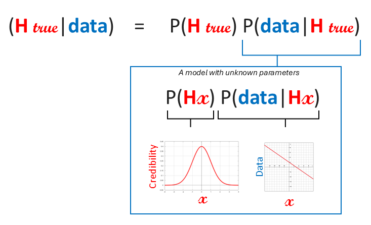
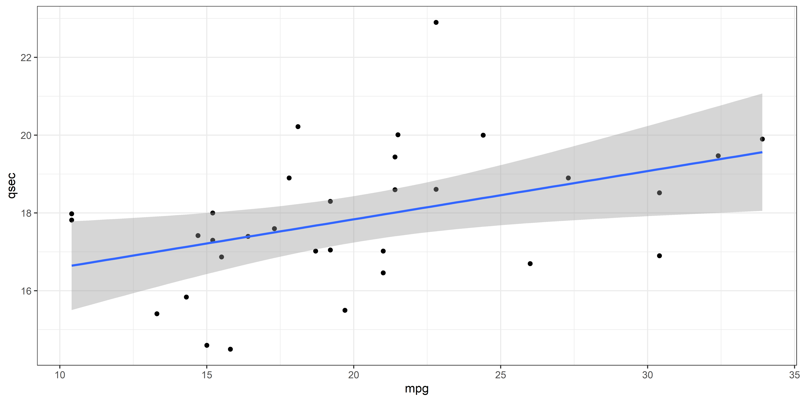
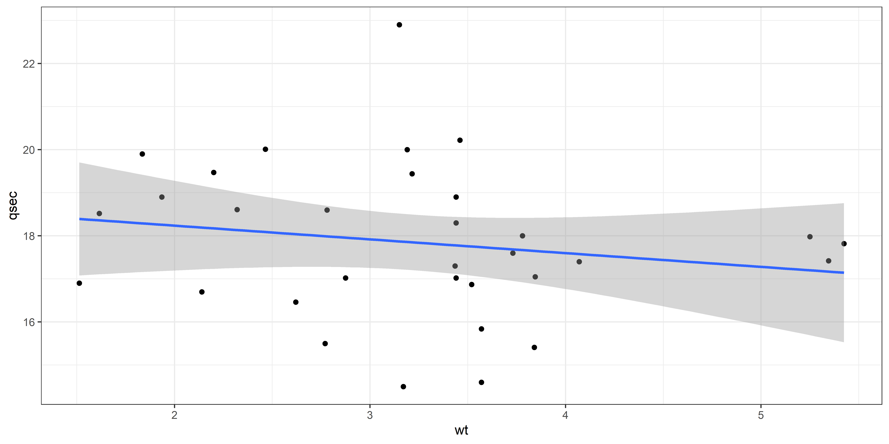
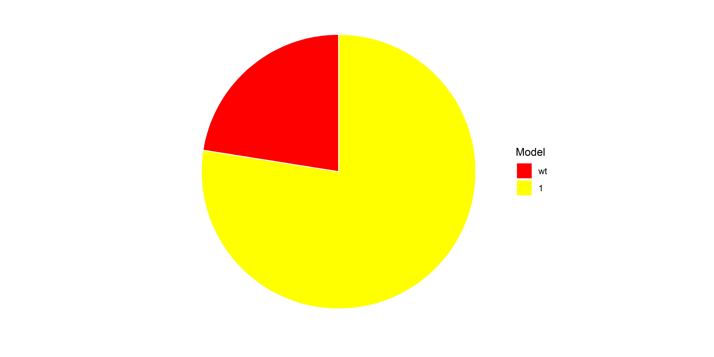

Bayesian Statistics
5. Bayes Factors (BIC approximation)
Dominique Makowski
D.Makowski@sussex.ac.uk
D.Makowski@sussex.ac.uk
Recap
- We learned about the Bayes’ Theorem:
- \(P(H|X) =\frac{P(H)~P(X|H)}{P(X)}\)
- And how it can be used to update our beliefs about a hypothesis given new data
Final nail in the coffin for the p-value
- Another thing often heard about the p-value is that it can only be used to reject the null hypothesis (effect = 0), not as an index of evidence in favour of the null
- This is because the p-value, by definition, is uniformly distributed under the null hypothesis
- This means that, if the null hypothesis is true, all values of the p-value are equally likely; p = .001 is just as likely as p = 1
Evidence against the null hypothesis?
- Altough Frequentists recently came up with some workarounds (region of practical equivalence testing), it is still seen as a limitation of the Frequentist framework
- This is problematic in science because we are often interested in disproving a hypothesis, or proving that there is no effect
- Does Uncle Bayes have a trick in his hat?
The “Likelihood” as a known model
- Bayes’ Theorem: \(P(H|data) =P(H)~P(data|H)\)
- Bayes’ theorem relates the probability of a hypothesis (H) given some observed evidence (data X) to the probability of data given the hypothesis, as well as the prior probability of the hypothesis
- \(P(data|H)\) is the likelihood of the data given a hypothesis
- It typically corresponds to a “model of the world”
- In the previous example, we had “the model” of coin tosses. We know the likelihood of outcomes given various coin types because it corresponds to a physical reality (a fair coin gives 50% heads). So the “model” was obvious and easy to define.

- Conceptually, in this experiment:
- The likelihood was a statistical model linking a parameter x (the probability by which a coin is biased towards heads: 0.3, 0.4, 0.5, 0.6, 0.7) to the outcome (heads).
- The prior corresponded to the distribution of our credibility across the different possible x values.
- The posterior corresponded to the updated distribution of our credibility across the different possible x values after observing the data (coin tosses).
The “Likelihood” as a model with probabilistic parameters
- We often have general beliefs about probabilistic models.
- What are the odds that more type of coints exist?
- What are the odds that my model of the coin is True
- …
- In practice, the model’s likelihood depends on uncertain parameter over which we have other priors, or a combination of priors (e.g., Intercept + Slope)

- The “likelihood”, as well as the “hypothesis”, can represent different things (a statistical model, beliefs about whether a general hypothesis is True, etc.)
- Problems can be specified in different ways (it is flexible framework)
- In typical real-life statistical scenarios, the likelihood term \(P(data|H)\) is very complex to establish mathematically (i.e., it is hard to compute/approximate it)
- But it is not impossible. And accessing the likelihood is very useful…
The “Likelihood”: Summary
- The likelihood \(P(data|H)\) represents “the probability of the data given a hypothesis”
- This hypothesis can be:
- A statistical model with fixed and known parameters (e.g., \(y = 2x + 3\))
- A statistical model with unknown (probabilistic) parameters (e.g., \(y = \beta x + Intercept\) with \(\beta \sim Normal(0, 1)\) and \(Intercept \sim Normal(3, 2)\))
- Any other statement about the world (e.g., a hypothesis like “this model is true”)
- Mathematically computing the value of \(P(data|H)\) is hard (aside from the first case)
Bayes Factor (BF)
- Bayes’ theorem provides a natural way to test hypotheses and compare models. Suppose we have two competing hypotheses: H1 and an alternative hypothesis H0
- What if we compared the likelihood of the data given two competing hypotheses (i.e., models)?
- \(P(data|H_{0})\) / \(P(data|H_{1})\)
- This ratio of likelihoods is known as the Bayes Factor (BF)
- It quantifies the relative strength of evidence in favor of one hypothesis over another based on the observed evidence (data)
- It tells us how much more likely the data (evidence) is under one hypothesis compared to another (often taking into account prior probabilities in the definition of the likelihood model)
- \(BF_{10} = \frac{P(data|H_{1})}{P(data|H_{0})}\)
- \(BF_{01} = \frac{P(data|H_{0})}{P(data|H_{1})}\)
- Note the convention of writing what is the numerator
BFs with BIC approximation
- The Bayes Factor is a ratio of likelihoods, which is often difficult to compute, especially for Bayesian models where parameters are themselves probabilistic
- Wagenmakers (2007)1 (one of the principal proponent of Bayes factors) proposed an approximation of the Bayes Factor based on the Bayesian Information Criterion (BIC), that can easily be computed for traditional Frequentist models (e.g., linear models)
- \(BF_{01} \approx exp(\frac{BIC_{1} - BIC_{0}}{2})\)
Model 0: qsec ~ mpg
mpg qsec wt
Mazda RX4 21.0 16.46 2.620
Mazda RX4 Wag 21.0 17.02 2.875
Datsun 710 22.8 18.61 2.320
Hornet 4 Drive 21.4 19.44 3.215
Hornet Sportabout 18.7 17.02 3.440
Valiant 18.1 20.22 3.460mtcars |>
ggplot(aes(x=mpg, y=qsec)) +
geom_point() +
geom_smooth(method="lm", formula = "y ~ x") +
theme_bw()
Call:
lm(formula = qsec ~ mpg, data = mtcars)
Residuals:
Min 1Q Median 3Q Max
-2.8161 -1.0287 0.0954 0.8623 4.7149
Coefficients:
Estimate Std. Error t value Pr(>|t|)
(Intercept) 15.35477 1.02978 14.911 2.05e-15 ***
mpg 0.12414 0.04916 2.525 0.0171 *
---
Signif. codes: 0 '***' 0.001 '**' 0.01 '*' 0.05 '.' 0.1 ' ' 1
Residual standard error: 1.65 on 30 degrees of freedom
Multiple R-squared: 0.1753, Adjusted R-squared: 0.1478
F-statistic: 6.377 on 1 and 30 DF, p-value: 0.01708mpgis a significant predictor ofqsec(\(\beta\) = 0.12, p < .05)- Is it worth it to add another predictor? Does it improve the model?
Model 1: qsec ~ mpg + wt
mtcars |>
ggplot(aes(x=wt, y=qsec)) +
geom_point() +
geom_smooth(method="lm", formula = "y ~ x") +
theme_bw()
- Do you think adding
wtwill improve the model?
Call:
lm(formula = qsec ~ mpg + wt, data = mtcars)
Residuals:
Min 1Q Median 3Q Max
-2.1092 -0.9617 -0.2343 0.8399 4.2769
Coefficients:
Estimate Std. Error t value Pr(>|t|)
(Intercept) 6.92949 3.53431 1.961 0.0596 .
mpg 0.32039 0.09138 3.506 0.0015 **
wt 1.39324 0.56286 2.475 0.0194 *
---
Signif. codes: 0 '***' 0.001 '**' 0.01 '*' 0.05 '.' 0.1 ' ' 1
Residual standard error: 1.524 on 29 degrees of freedom
Multiple R-squared: 0.3191, Adjusted R-squared: 0.2722
F-statistic: 6.797 on 2 and 29 DF, p-value: 0.003796- Be careful! A model with multiple predictors is different from individual models taken separately (because variables interact with each other)
- Is model1 better than model0?
- Higher R2, but more parameters (more complex model). Comparing BICs is an alternative that takes into account the number of parameters
Extract BICs
- Normally, the lower the BIC, the better the model
- Hard to interpret in absolute terms (the unit is meaningless), but we can compare models (if they are related to the same data)
Compare BICs
- \(BF_{10} \approx exp(\frac{BIC_{0} - BIC_{1}}{2})\)
- We can apply the formula to
bic1andbic0
- You computed an approximation of the Bayes Factor “by hand”!
Using bayestestR
BF10 vs. BF01
- Bayes factors are a ratio of likelihood of data under some hypothesis
- They quantify “how much” the data is more likely under one model compared to another
- \(BF_{10} = 3.80\) means the data is 3.80 times more likely under model1 than model0
- Importantly, BFs are “reversable”:
- \(BF_{01} = \frac{1}{BF_{10}} = 1 / 3.80 = 0.263\)
- The data is 0.26 times more likely under model0 than model1
- We gather evidence both ways (in favour or against a hypothesis)
- Is this “big”? How to interpret BFs?
Bayes Factor Interpretation
- The standard threshold for a “significant” BF is 3 or 10
- Jeffreys, H. (1961), Theory of Probability, 3rd ed., Oxford University Press, Oxford
| Bayes Factor (\(BF_{10}\)) | Interpretation |
|---|---|
| > 100 | Extreme evidence for H1 |
| 30 – 100 | Very strong evidence for H1 |
| 10 – 30 | Strong evidence for H1 |
| 3 – 10 | Moderate evidence for H1 |
| 1 – 3 | Anecdotal evidence for H1 |
| 1 | No evidence |
| 1/3 – 1 | Anecdotal evidence for H0 |
| 1/3 – 1/10 | Moderate evidence for null H0 |
| 1/10 – 1/30 | Strong evidence for null H0 |
| 1/30 – 1/100 | Very strong evidence for H0 |
| < 1/100 | Extreme evidence for H0 |
Bayes Factor Interpretation
- The
effectsizepackage provides many automated interpretation functions
- Note that because BFs can be very big or very small, they are sometimes presented on the log scale (\(log~BF_{10}\)), in which case numbers smaller than 1 become negative
- To “unlog” a logged BF, use
exp()
Exercice
- Compute the Bayes Factor for the following models:
qsec ~ wtvs. a constant model - A constant model, aka an “intercept-only” model, is a model with no predictors (only an intercept)
- A constant model basically predicts the mean of the outcome variable for all observations
- Compute the BF and interpret it. Make a conclusion
Solution
- BF < 1/3 (0.3333)
Exercice 2
- “I try to analyze the linear relationship between the sepal length and the sepal width of the iris flowers (
irisbuilt in dataset). Should I control for Species?”
m1 <- lm(Sepal.Length ~ Sepal.Width, data = iris)
m2 <- lm(Sepal.Length ~ Sepal.Width + Species, data = iris)
bayestestR::bayesfactor_models(m1, denominator=m2)Bayes Factors for Model Comparison
Model BF
[m1] Sepal.Width 2.96e-40
* Against Denominator: [m2] Sepal.Width + Species
* Bayes Factor Type: BIC approximation- Pizzas can help us get a intuitive feeling for BFs
1
2
Pizza plot
Summary
- Bayes Factors are indices that compare two “hypotheses”
- They correspond to the ratio of “likelihoods”
- They can be approximated for frequentist models via the BIC-approximation
- There are interpretation rules of thumb (> 3, > 10, > 30, > 100)
- They can be expressed on the log scale
The End (for now)
Thank you!